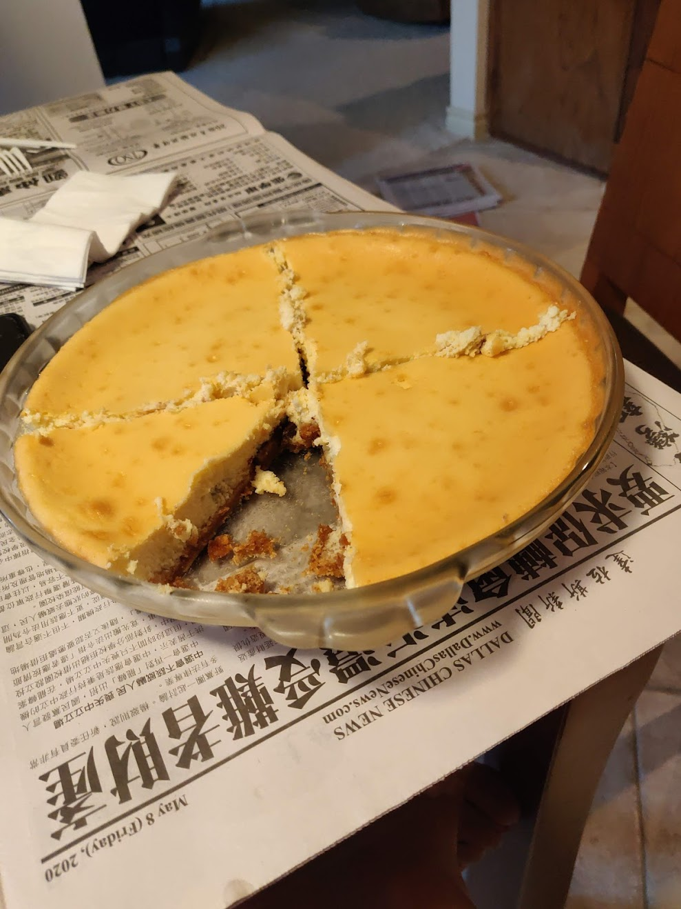

Cheesecake

My cousin's cheesecake recipe. Absolutely the best cheesecake I've ever
had. It is so freaking good. Also not very hard to make. Other than the
water bath part. Just gotta make sure that it doesn't leak. Even if it
does it's still a banger recipe. If you want the cheesecake to chill/set I
would recommend to make it the day before you need it as you need to shove
it in the fridge.
Source
Ingredients:
Filling:
- 32 oz Cream Cheese (room temp)
- 1 1/3 cup sugar
- pinch of salt
- 2 tsp vanilla
- 4 eggs
- 2/3 cup sour cream
- 2/3 cup heavy cream
Crust:
- 1 3/4 cup of crumbs (graham crackers are a really good choice.)
- 2 tbsp sugar
- 1 tbsp brown sugar
- 7 tbsp melted butter
Mixing and Baking and shit:
Crust:
- Preheat the oven to 350 F
-
Place crackers in a ziplock bag and beat the shit out of it until its
crumbly with some chunks. (or if you're fancy and have money then you
can use a food processor)
- Mix everything together really well.
-
Press the crumbs into the bottom of the pan and make sure it's even. You
can also press the crust around the side of the pan as well if you want
a higher crust and less chance to leak if you're using a springform pan.
- Bake the crust for 10 minutes
- Wrap the pan in foil
Filling (white and creamy just like your girl like it):
- Preheat oven to 325 F
-
Beat cream cheese and sugar together like you do at night. (you can use
a stand mixer or a whisk or your underpaid wage slave if they're
available)
- Add everything else and mix until smooth.
-
Pour mixture onto crust (make sure crust is not hot and cooled down)
-
Toss the cheesecake into the oven with a water bath for 40 minites or
until golden brown(Google it if you don't know)
-
Once ready (should have a slight jiggle to it) let it cool in the oven
until room temp then chill overnight in the fridge.